bonsai / v0n5ai
MEDIA ARTIST / CREATIVE TECHNOLOGIST
身体の信号と回路と音を、境界なく繋ぐメディアアーティスト。RISC-V マイコンを中心にした自作ハードウェアで、心電図・声紋・LED・音を扱う作品を制作。センシングから表現までを一貫して自作する。
3594
直近3ヶ月の貢献
89/91
アクティブ日
262
オリジナル作品
705
公開リポジトリ
Body / Biosensing
uiap-ecg-monitor
自作心電図計 — アナログフロントエンド + RISC-V で生体信号を可視化。計装アンプ(AD620)・Pan-Tompkins R波検出・TinyML 異常分類。バッテリー駆動・ガルバニック絶縁の安全設計。
uiap-voiceprint-auth
声紋認証システム — エッジ端末(CH32V003)上で MFCC 特徴抽出による話者識別。サーボモーターで物理ロックを制御。
uiap-sensor-hid
USB HID センサー — RESET ボタンを HID デバイスとして MQTT ブリッジに接続する IoT インターフェース。
Light
led-board
電光掲示板 (LED Board) — 光の文字盤。Web から駆動する LED ボード。
uiapduino-4led
290円 RISC-V マイコン(CH32V003)で 4 LED を駆動 — 最小コストの光の制御実験。
led-poc
LED 表現の PoC 群（GDScript による光のシミュレーション）。
Sound
4bit-music-riscv
4-bit music on RISC-V — チップ上のレジスタで 4bit 音楽を鳴らす。
audio-patch-simulator-next
モジュラーシンセ風パッチシミュレータ — Web Audio でケーブルを繋ぐ音の実験。
sound-gen
AudioGen + MusicGen による lo-fi hiphop 生成パイプライン。
8bit-Jazz
8bit ジャズ — 制約の上に音楽を載せる試み。
Interaction / Space
microbit-smartlock
micro:bit スマートロック — 古いスマホ + povo 2.0 で月額ほぼ0円の DIY スマートロック。
wifi-visualizer
WiFi 可視化 — 空間の電波をアートとして捉える。
wifi-ar-visualizer
WiFi AR visualizer — 空間に重ねる電波の可視化。
🌱 直近 3 ヶ月の活動

🛠️ 技術スタック
ハードウェア
- RISC-V マイコン (CH32V003/203/307)
- Arduino / micro:bit / USB HID
- MQTT / BLE / センサー回路
信号処理
- MFCC / DSP / Pan-Tompkins
- TinyML (BitNetMCU 1-bit)
- 固定小数点数演算 (Q15)
メディア
- Web Audio API
- GLSL シェーダー
- AI 音声生成 (AudioGen/MusicGen)